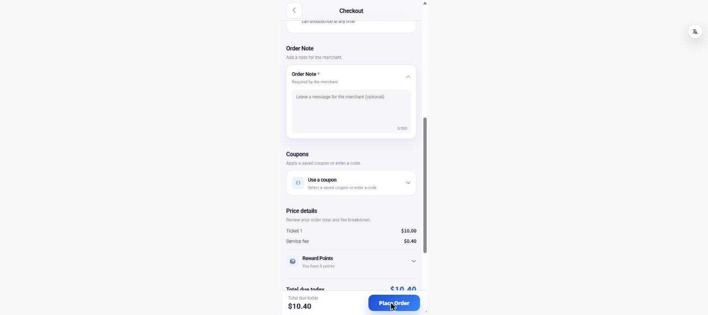
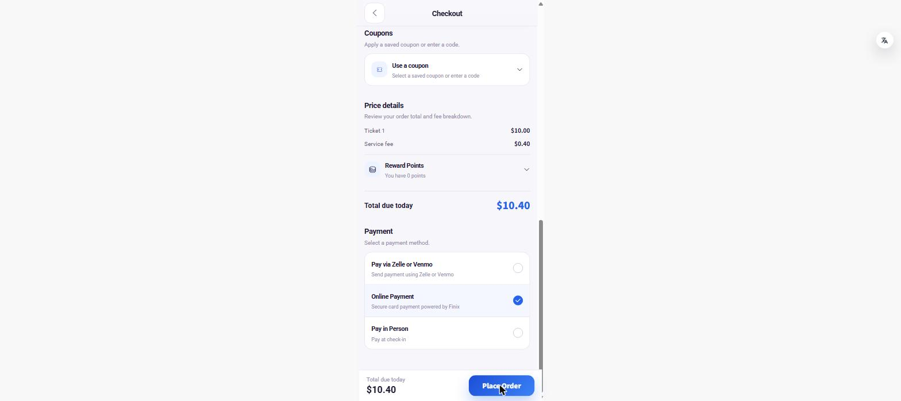
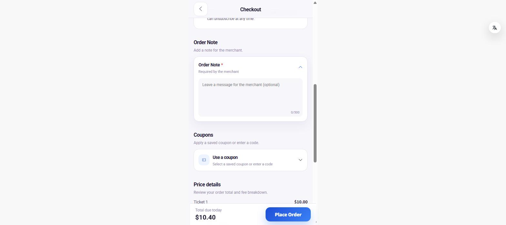
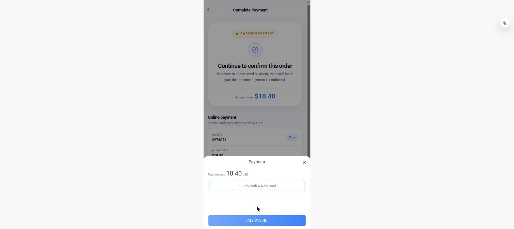
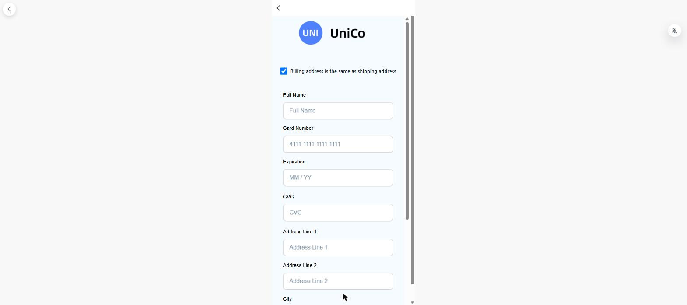
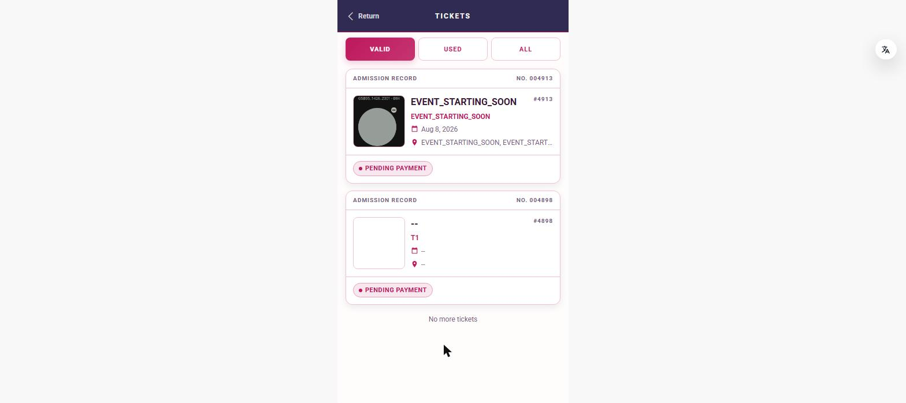
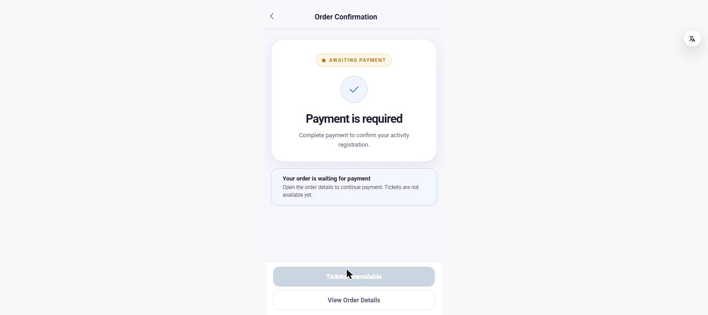

Customer-perspective pass over the eventtest01 store on the local dev build, focused on the new payment flow and abandonment edge cases.
| # | Severity | Issue | Status |
|---|---|---|---|
| 1 | High | Place Order fails silently when the required Order Note is empty | New |
| 2 | High | Order Note is cleared on return to checkout while all other fields persist | New |
| 3 | Medium | Unpaid orders consume event inventory | New |
| 4 | Medium | “Pay” proceeds to the card page with no card selected | New |
| 5 | Medium | Card form takes ~15 s to appear with no loading indicator | New |
| 6 | Medium | Tickets “Valid” filter lists Pending Payment tickets | New |
| 7 | Low | Malformed payment URL: null literals, duplicate param, nested query string | New |
| — | Known | Order Note expanded by default | FLPD-274 #1 |
| — | Known | Attendee fields auto-filled from history | FLPD-274 #4 |
| — | Known | Back arrow on interstitial pages | FLPD-274 #9 — appears fixed |
The Order Note card is labelled Order Note * with the subtitle “Required by the merchant”, while the field’s own placeholder reads “Leave a message for the merchant (optional)”. The card contradicts itself.
With the note left empty, pressing Place Order does nothing observable: no toast, no inline error, no field highlight, and — confirmed with the network log cleared immediately beforehand — zero network requests. The console records no validation message either. Filling the note lets the order through immediately, which confirms the note is the blocker.
A customer has no way to discover what is wrong. The button simply appears broken.
Reproduce: pick an event → select a package → Reserve Tickets → leave Order Note empty → Place Order.


Filling checkout part-way, navigating to the home page, then returning restores the attendee name and email exactly as typed — but the Order Note comes back empty, with no indication anything was dropped.
Because the note is the one genuinely required field, and because it is also the field whose absence fails silently (issue 1), the two defects compound: the customer returns to a form that looks complete, presses Place Order, and nothing happens with no explanation.
Reproduce: fill name and Order Note → navigate to home → navigate back → the note is blank, the name is not.

The package showed “12 shared spots left” before ordering. After placing order #274073 — which remains at Awaiting Payment and was never paid — it showed “11 shared spots left”.
Seats are therefore held by orders that may never be paid, with no visible release. The same behaviour was observed on the production store, so this is not specific to the new flow.
Reproduce: note “spots left”, place an order, choose not to pay, reload the event page.
The payment sheet offers “+ Pay With A New Card” and a “Pay $10.40” button. Pressing Pay without choosing or adding a card navigates onward to the card page anyway, with no prompt to select a payment method first.
Worth separating from Finix’s own behaviour: once the card form itself renders, its Pay button is correctly disabled until the fields are valid. The gap is in the Unico sheet that precedes it.

After continuing to card payment, the page renders only a “UniCo” logo and a “Billing address is the same as shipping address” checkbox for roughly fifteen seconds before the card fields appear. There is no spinner, skeleton, or message during the wait.
On a payment screen this reads as a broken page, and invites the customer to reload or press back mid-transaction.
Two smaller points on the same form: the “Billing address is the same as shipping address” box is ticked, yet the full address block is still shown and empty — and for an event ticket there is no shipping address for it to refer to.

The Tickets page Valid tab returns two tickets, both badged Pending Payment. The filter is not excluding unpaid tickets. Identical behaviour was found on the production store.
Separately, ticket #4898 renders its event name, date and venue as -- with a blank thumbnail, so the row carries no usable information.

--.The card page is reached at a URL containing several defects:
phone=null&finixId=null — the string “null” passed as a value rather than the parameter being omittedorderType=6&orderType=6 — the same parameter twiceredirectPath=/pages/order/activity-confirm?orderId=274073 — an unencoded nested query string, so the second ? makes the tail ambiguous to any standard parserNone of these broke the flow in testing, but they are fragile and they publish the post-payment redirect target in the address bar.
#/pages/order/activity-confirm?orderId=274073 — the redirect target the URL itself discloses — correctly returns “AWAITING PAYMENT / Payment is required”, with the tickets button disabled and reading “Tickets Unavailable”. No pass is issued. This is the defect that is exploitable on the production store, and it is closed here.
These reproduce but are already covered by FLPD-274 and are recorded here only as confirmation, not as new reports.
Also still present, unchanged from the earlier dev pass: TypeError: service.request is not a function at cool/bootstrap/eps.ts:85 on every page load, and the browser tab title rendering as the literal string name.
-- placeholder rendering on ticket #4898.null literals, de-duplicate orderType, and encode redirectPath.Scope. Tested as an anonymous guest against the local dev build (HBuilderX H5 on localhost:9900) at #/?domain=eventtest01, on 6 August 2026 at desktop width. One order was placed — #274073, $10.40, Online Payment — and deliberately left unpaid at Awaiting Payment.
Not covered: the card transaction itself. No card number was entered, so the post-payment behaviour — including whether the order status refreshes correctly once payment clears (FLPD-274 #3) — was not exercised and remains unverified in this pass. Also not covered: coupon redemption, points redemption, membership purchase, refunds and cancellations, merchant-side check-in, and non-H5 targets.
Note on ports. Starting the dev server brings HBuilderX up on 127.0.0.1:8888 for livereload, alongside the 总后台 already bound to [::]:8888. The admin remains reachable on localhost:8888 and [::1]:8888; only the literal 127.0.0.1:8888 is shadowed. Ports 3000 and 3030 were untouched.